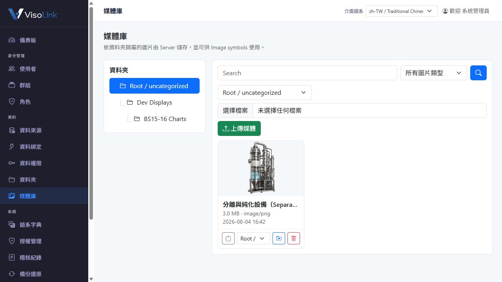

Media Library 媒體庫
集中管理圖面與內容可使用的媒體檔案；操作前應確認格式、大小與引用位置。
瀏覽媒體清單

- 點選「資料 → 媒體庫」。
- 查看預覽、檔名與所在資料夾。
- 確認檔案是否仍被 Display 使用。
搜尋與篩選媒體
- 輸入檔名或關鍵字。
- 選擇適用的資料夾或條件。
- 點選搜尋。
- 清除條件可恢復完整清單。
上傳媒體
- 選擇目標資料夾與本機檔案。
- 確認檔案不含敏感資料且符合允許格式。
- 點選 Upload Media。
- 確認清單出現預覽，再到實際使用畫面驗證。
媒體卡片可正常預覽，名稱、格式與目的資料夾正確。
移動媒體與複製位置
- 使用複製按鈕取得媒體位置，供允許的設定引用。
- 需要整理時選擇新資料夾並點選移動。
- 移動後驗證既有 Display 是否仍能載入。
媒體顯示在新資料夾，既有 Display 仍可正常載入。
刪除媒體
- 先搜尋程式或 Display 引用位置。
- 完成替換並於 Runtime 驗證。
- 在媒體清單點選刪除並確認。
- 重新整理確認檔案已移除。
注意：刪除仍被引用的媒體可能造成前台破圖。